Capitoli
- Introduzione
- La prima infanzia
- La scuola materna
- Gli ambulanti
- Le attività commerciali
- Trattorie e bar
- La scuola elementare
- Gli oratori
- Passatempi e giochi
- Autunno e Inverno
- Primavera e Estate
- Il cinema Parco
- La scuola media inferiore
- I complessi rock
- La Televisione
- La TV dei ragazzi
- Il calcio
- Sulla tavola
- Cembul
- Le ferie negli anni ’60
- Novembre e la nebbia
- Ul Falò
- Maggio, il mese della Madonna e la festa della Misericordia
1. Introduzione
La motivazione che mi spinge a pubblicare questo post e quelli che verranno, è quella di condividere un ritaglio della vita che le persone della mia generazione hanno vissuto in un paese alle porte di Monza.
L’intento è che i giovani, e anche i meno giovani, ritrovino la bellezza delle piccole cose, dello stare insieme, delle amicizie che, soprattutto con il passare degli anni, sono esperienze che restano impresse nel nostro cuore.
Non rimpiango i tempi passati, oggi abbiamo un benessere sicuramente superiore ed abbiamo a disposizione tecnologie impensabili già solo dieci anni fa, ma siamo abituati a voler tutto e subito senza fare sacrifici e forse abbiamo anche perso un po' di umanità e di rispetto.
Queste pagine non vogliono essere “se non l'avete fatto” siete degli sfigati, semplicemente noi l'abbiamo vissuta così.
Se state ancora leggendo, visto che la maggior parte delle persone nella rete non va oltre la prima pagina, sono felice di avervi instillato il desiderio e la curiosità di leggere.
La lettura invita a pensare, a meditare e allarga i propri orizzonti, in una frase “fa funzionare il cervello”.
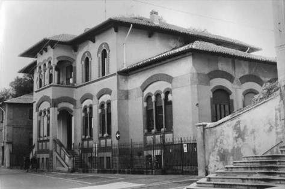
2. La prima infanzia
LA PRIMA INFANZIA NELLA SECONDA META’ DEGLI ANNI ’50 ED IL CONTESTO IN CUI SONO CRESCIUTO.
I miei ricordi personali dei primi tre anni di vita sono sbiaditi, legati ai racconti dei miei genitori, dei miei nonni ed a qualche foto ricordo con dei bambini vicini di casa, quindi mi dilungherò più sul contesto.
Per me tutto inizia il pomeriggio della domenica della festa di Vedano, appena passata la processione. Come molti coetanei nasco in casa, in Via Piave, con l’aiuto dell’ostetrica Valentina, altri amici sono nati in “Curt d'insù”, o in Vicolo Isonzo o nella “Curt da l’asilo vecc” o altri ancora a “Vedan Burlon”.
In quegli anni il paese di Vedano al Lambro era formato dal centro storico, incastonato alla destra della provinciale Monza Carate ed una rientranza del parco di Monza e della Villa Litta (cà Lita), e dalla campagna situata alla sinistra della provinciale confinante a sud con Monza a ovest con Lissone ed a Nord con Biassono.
Il parco era una presenza sempre percepibile e visibile perché i suoi alberi svettavano sopra le case che non superavano i tre piani di altezza.
Nel centro storico c’era la chiesa, l’asilo, gli oratori, la scuola elementare, il comune, alcune fabbriche e molte corti adiacenti ed a volte comunicanti; la parte della campagna era perlopiù caratterizzata da costruzioni modeste, da alcune cascine sparse sul territorio (Zapa, Perada, Casineta-..) e verso nord ovest da una zona che si stava sviluppando velocemente senza un chiaro piano regolatore da cui il nome di Burlon (oggi i miei figli direbbero “a muzzo”).
Tutte le corti in origine avevano delle caratteristiche molto simili, la parte esterna era dotata solo di finestre e l’accesso era permesso solo attraverso da un grosso portone, questo permetteva agli abitanti di sentirsi protetti da stranieri o malintenzionati, la parte interna aveva le abitazioni, i fienili e le stalle. Negli anni ’50 la parte esterna si era già modificata e specialmente nelle principali strade asfaltate erano stati aperti gli esercizi commerciali. All’interno le corti erano formate da un grosso cortile sterrato su cui si affacciavano le case di ringhiera adibite ad abitazione e le stalle che erano ormai quasi tutte diventate magazzino o autorimessa per le persone che possedevano un’auto. Una delle poche stalle che ricordo avesse ancora animali era quella della “biunda, la nona dal Vichingo” dove andavo a comperare il latte appena munto. Normalmente alle estremità dei lunghi ballatoi, nei cortili o dietro le stalle, erano posizionati i gabinetti comuni “i cess” che erano sprovvisti di acqua e di carta igienica.
La casa di ringhiera aveva un portone di ingresso diviso in due parti, di solito la parte sinistra veniva bloccata da “un rampon” un’asta di metallo, appena dopo c’era un’altra porta sempre divisa in due parti che normalmente aveva nella parte superiore un vetro lavorato che non permetteva di vedere distintamente all’interno. Si entrava nella stanza principale dove c’erano il tavolo con “i cadrec” le sedie, “l’utumana” il divano che poteva contenere un letto aggiuntivo, “ul büfè” la credenza, “ul cardensen” il controbuffet, “ul portamantel” l’appendiabiti e a volte si trovava anche “l’usc busiard” una rientranza del muro che era chiusa da una porta e serviva da piccolo ripostiglio. Nelle case non mancava mai una macchina da cucire azionata a pedale per fare o sistemare i vestiti.
Dalla stanza principale si entrava nel cucinino “ul sbrigacüsina” che era di solito ricavato dalla stanza principale con l’installazione di una parete fatta di legno “l’asada”. Il riscaldamento era fornito da una stufa a carbone o convertita a gas alimentata dal gas di città o da una bombola a metano, sul suo lato sinistro era posizionata una caldaietta che per contatto scaldava l’acqua contenuta e forniva acqua calda da utilizzare per lavarsi, per lavare i panni e le stoviglie; sul “canon dala stüa” ovvero la canna fumaria erano fissate a raggiera delle asticelle di metallo che servivano per far asciugare i panni; per fare asciugare le lenzuola si utilizzava la “cana” un lungo pezzo di canna di bambù alle cui estremità erano annodate due corde che passavano in due piccole carrucole fissate al soffitto permettendo il movimento di salita e discesa. Il bagno settimanale veniva fatto nel “caden” una vasca di metallo o di plastica (Moplen) opportunamente riempita con secchi di acqua bollente e acqua fredda.
La stanza da letto poteva essere sullo stesso livello oppure era al piano superiore raggiungibile dalle scale esterne oppure con una scala interna a pioli attraverso “l’usc busel” un foro praticato nel soffitto. All’interno c’era un armadio a tre ante che conteneva i vestiti di tutta la famiglia, “ul comò o cifon” con sopra Maria Bambina coperta da una cupola di vetro (mi ha sempre fatto un po’ paura), “i cumudit o cifunit” che contenevano “i vas da noch” i pitali per la notte ed infine “i lecc” i letti per ciascun componente della famiglia. La stanza era fredda e durante l’inverno oltre a mettere “la prepunta” la trapunta e “i trapuntit”, una specie di grossi cuscini quadrati riempiti di piume o di penne, per scaldare un po' il letto si posizionavano sotto le coperte “la bula” un recipiente di metallo di varie forme riempito di acqua calda ed “ul quadrel” un mattone che tratteneva il caldo dopo essere stato posizionato vicino al bruciatore della stufa.
Dalla stanza da letto, sempre con una scala a pioli, era a volte possibile accedere al sottotetto “ul spasecà” dove erano riposti legna, carbone, vecchi arredamenti ed ogni sorta di materiale poco usato.
L’energia elettrica a 125 Volt che serviva per l’illuminazione era stata affiancata da quella a 220 Volt perché il boom economico stava portando in tutte le case del paese il frigorifero, la lavatrice, la macchina da cucire elettrica e la televisione in bianco e nero.
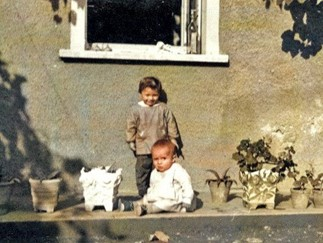
3. La scuola materna
LA SCUOLA MATERNA AGLI INIZI DEGLI ANNI ’60
L’asilo che ho frequentato era intitolato alla contessa Eugenia Litta Bolognini ed era stato costruito nel 1921 dalla famiglia Litta in una parte del parco di sua proprietà. La gestione e l’educazione era stata affidata alle Suore Adoratrici del Santissimo Sacramento di Rivolta d'Adda, di loro ricordo solo qualche nome, Suor Franceschilla una donna robusta e austera, Suor Celestina più mingherlina e mite, Suor Giuliana ed in cucina Suor Quirina piccola e cicciottella.
Nei primi giorni il distacco dalla mamma era abbastanza traumatico per tutti, ma poi una volta salite le scale cominciava una nuova vita. I ricordi riaffiorano e rivedo, nel lungo corridoio che portava alle classi, una lunga fila di appendiabiti ciascuno con al fianco un simbolo di un animale o di un oggetto, a me era toccato il simbolo di una sega da falegname. Dopo aver attaccato il cappotto, si entrava nelle aule divisi per età (piccoli, medi, grandi) piscinit mezan e grandt e per sesso (maschi e femmine) bagai e tusan e dopo la consueta preghiera si iniziavano i “lavoretti”. Ricordo con poco entusiasmo il lavoro di punteggiatura delle sagome di carta per i modelli da ricamo, e con piacere le creazioni fatte con il pongo. All’ora di pranzo ci si riuniva tutti nel salone principale, tutti i bambini erano seduti ai tavoli da pranzo con davanti una tasascodella di minestra che, per evitare di rovesciarla, era infilata negli appositi buchi ricavati nei tavoli. Dopo pranzo arrivava l’ora del sonnellino pomeridiano “ul sugnet dal dopu disnà”, i più grandi aiutavano le suore a portare dalla cantina le sdraiette e si cominciava a dormire (chi più e chi meno). Dopo il sonnellino, chi si era portato “i vint franc” le venti lire, poteva comprarsi la merenda. Un aneddoto che ricordo è che ogni tanto c’era qualche bambino che inghiottiva le venti lire e che poi tutta la famiglia doveva passare qualche giorno in apprensione per vedere se riusciva ad espellerlo. Un altro ricordo che mi torna alla mente è “un despresi” un dispetto dovuto al fatto che spesso le suore ci dicevano che le bambine erano più brave e che facevano i lavoretti col pongo migliori dei nostri. Fu così che durante l’ora di pranzo due bambini camminando sul cornicione che collegava dall’esterno le aule fecero irruzione nella classe delle bambine e distrussero i loro lavoretti.
Al di là di alcuni episodi o delle varie malattie infettive che puntualmente colpivano un po’ tutti, la maggior parte dei giorni passava con gli stessi ritmi ad eccezione di quando partecipavamo ad una processione o ad un funerale.
In entrambe le occasioni ci veniva data una mantellina blu ed un berretto, le suore sceglievano il più alto a cui veniva assegnato il compito di portare l’asta con la bandiera italiana e ci disponevano tutti ben allineati a due a due. Poi partiva il corteo con la banda che accompagnava il corteo con le musiche appropriate.
La partecipazione ai funerali era ahimè un po' triste, ma alla fine per noi bambini gratificante perché di solito i parenti del defunto ci donavano “i bum bon” delle caramelle.
Penso che per tutti la frequentazione dell’asilo sia stata molto importante e formativa perché ci ha permesso di capire il significato della condivisione degli spazi, di provare nuove emozioni, della bellezza dello stare insieme, pur rispettando delle regole, e di creare quei rapporti di amicizia che rimarranno per sempre scolpiti dentro di noi.
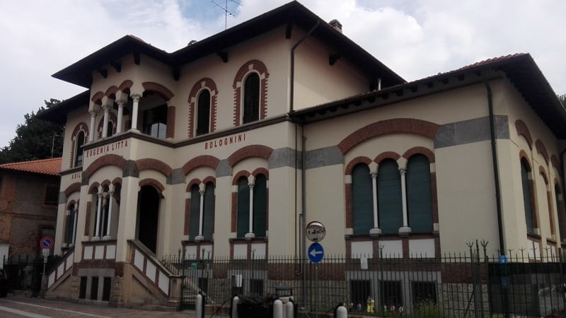
4. Gli ambulanti
GLI AMBULANTI NEGLI ANNI ’60.
Periodicamente per le vie del paese e nelle varie corti arrivavano degli artigiani che con le loro cantilene richiamavano l’attenzione delle persone, erano gli ambulanti. Ricordo, “l’umbrelè” l’ombrellaio che riparava la maggior parte degli ombrelli in loco se avevano qualche parte rotta o usurata come la chiusura o un’asticella, oppure li riparava nel suo laboratorio se doveva essere sostituito il tessuto e li riportava al giro successivo, il timbro della sua voce era particolare e si udiva da lontano il suo “umbrelee..umbrelee.. ombrellaiooo”. C’era poi “ul magnan” lo stagnino che riparava con lo stagno fuso “i padelot” le pentole bucate o “la bula” il contenitore dell’acqua calda, lui intonava questo ritornello “O donn ghe chi ul magnan cal ga voia da lauraa”, normalmente aveva una carnagione scura non sò se dovuta alle origini o semplicemente perché, per il lavoro che faceva, era sempre sporco; infatti, si usava spesso dire ai bambini quando erano sporchi “ta se tut magnanà”. Un altro ambulante era “ul muleta” l’arrotino che affilava “i curtei e i forbis” i coltelli e le forbici utilizzando una mola fissata o sul canotto della bicicletta oppure sul portapacchi posteriore della bicicletta, il movimento era assicurato da un meccanismo che era collegato ai pedali della stessa, la sua cantilena “Zinzeta la furbeseta, fala mulà, ..” era anche usata dai genitori o dai nonni che mettevano i bambini sulle ginocchia e incrociando loro le braccia facevano il gesto della forbice che si apre e si chiude. Ma quello che noi bambini aspettavamo con gioia era “ul strascee” il cenciaiuolo che raccoglieva tutti gli indumenti smessi e gli stracci ed in cambio dava della candeggina o delle liquirizie “i ratit” per noi bambini, le sue urla erano le più alte di tutti gli altri, ancora oggi quando le persone alzano un po' il tono della voce si dice “ta vusat comè un strascee”. Nei mesi estivi arrivava col suo “furgunen” un triciclo che aveva il pianale davanti alla bicicletta, “ul materasee” il materassaio che eseguiva la manutenzione dei materassi di lana “schiscià” appiattiti per l’utilizzo, con l’aiuto delle massaie il materasso veniva scucito, si estraeva la lana ed il tutto veniva lavato e steso al sole ad asciugare, infine la lana veniva cardata e rimessa nel materasso. Il materassaio infilava i fiocchetti e ricuciva il bordo del materasso con “i gugion” degli aghi lunghissimi. C’erano poi altri ambulanti che commerciavano vari prodotti come “l’urtulan” il fruttivendolo che promuoveva la sua merce al grido di “fresc e béla”, chi vendeva vestiti, bottoni, gomitoli di lana; d’estate passava “l’anguriat” che vendeva solo le angurie e per mostrare la qualità del suo prodotto faceva un tassello sul frutto e lo faceva assaggiare ai potenziali compratori.
Tutti questi mestieri con l’avvento del benessere sono spariti perché il costo della manodopera era di gran lunga superiore a quello dell’acquisto di un prodotto nuovo e qui nasce il continuo contrasto tra il consumismo e il rispetto per l’ambiente. A mio avviso le due ideologie non sono in conflitto ma possono convivere se gestite correttamente. Naturalmente le industrie devo fare la loro parte, ma ciascuno di noi deve rispettare l’ambiente in cui viviamo, dobbiamo insegnarlo ai nostri figli ed ai nostri nipoti, riciclare tutto il possibile è un dovere di ciascuno per non esaurire le limitate risorse che abbiamo sul pianeta.
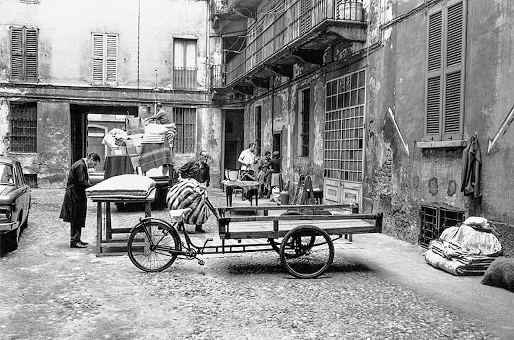
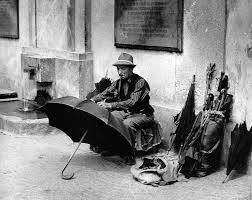
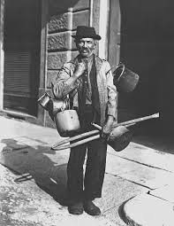
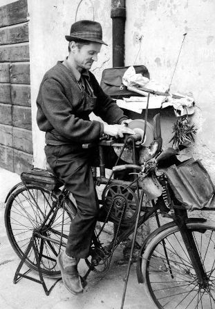
5. Le attività commerciali
I RICORDI DELLE ATTIVITA’ COMMERCIALI NEGLI ANNI ’60.
Sono molti i negozi che ricordo, ma vi parlerò solo di quelli che mi hanno lasciato un ricordo particolare. Inizierei dalle latterie, quella di Ida aveva un gelato al gusto panna (oggi lo chiamano crema) che mi piaceva moltissimo, ad oggi non sono più riuscito a ritrovare lo stesso sapore, quella di Neta, una gentile anziana signora, da cui preferivo il gelato al gusto di limone e d’inverno la panna montata; mi tornano alla mente i ghiaccioli della ditta Crippa, se eri fortunato sul bastoncino trovavi la scritta “Crippa raddoppia” che ti garantiva un ghiacciolo gratuito. Entrambe le latterie avevano all’esterno dei distributori di “cichet” le biglie di vetro, di cicche (chewing gum) e di semi di zucca che funzionavano inserendo una moneta da dieci lire nell’apposita fessura e ruotando “la maneta” la maniglia. C’erano poi “i frutiroe o i urtulan”, i fruttivendoli che erano “la Vila” e “Batarel” che oltre alla frutta vendevano dolciumi, cerbottane e i fogli con stampati i soldatini di carta, dimenticavo “Giacumen”, uno dei primi immigrati arrivati dal sud, che era sempre fuori dal negozio ad attirare i clienti con la sua vivacità. Dalla cartoleria di Rosa, una piccola signora già attempata, comperavo il Corriere dei Piccoli, il materiale didattico e naturalmente le figurine dei calciatori (la figurina di Quintavalle/Bigon era quasi impossibile da trovare per finire l’album della Panini). Delle drogherie ricordo “la cuperativa” che non aveva un proprietario ma era stata fondata appunto da una cooperativa di soci operai e contadini, “Filipen”, “Luisen Pumpè”, “Giuanoe”, “Celsu” tutti oggi sarebbero dei minimarket, ma molta della merce era venduta sfusa, ricordo ancora lo zucchero confezionato nella famosa carta da zucchero di colore blu. I “prestinee” i panettieri, “ul Vedovati”, “Grimel” e “la prestinera a mes” perché era locata a metà tra gli altri due, ciascuno aveva le proprie specialità (a me piaceva il “pan cun l’uga”) ma tutti avevano il pane comune ancora acquistato dalle persone meno abbienti perché aveva un prezzo calmierato. Visto che poche famiglie disponevano di un forno utilizzabile per cuocere le torte, durante la settimana antecedente la festa patronale di Santo Stefano, tutti portavano la torta paesana (o di latte o di pane) cruda “in da la sidela” nel secchio dal panettiere per farla cuocere. Le male lingue dicevano che qualche panettiere toglieva un po' di contenuto da ciascun secchio per fare delle torte che vendeva come proprie. Nei negozi di alimentari era consuetudine non pagare ogni giorno la spesa ma si segnava l’importo su di un libretto personale il cui totale veniva pagato alla fine di ogni mese. La rosticceria di “Primina”, al venerdì, cucinava il merluzzo fritto da mangiare con sopra un’abbondante spolverata di zucchero (ogni tant anca la biseta). Nella “curt da poldu”, c’era la macelleria di “Puldina”, una piccola rotonda signora, che all’interno del cortile aveva il macello dove le mucche venivano uccise e macellate, ricordo con un po' di ribrezzo la quantità di sangue che restava sul pavimento dopo la lavorazione. Infine, il parrucchiere “Giuachen” con “Franceschelu” dove andavo a farmi tagliare i capelli, tutti noi ragazzi cercavamo di evitare il proprietario perché, per motivi a noi sconosciuti, continuava ad emettere dei rumori che provenivano dallo stomaco.
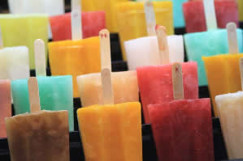
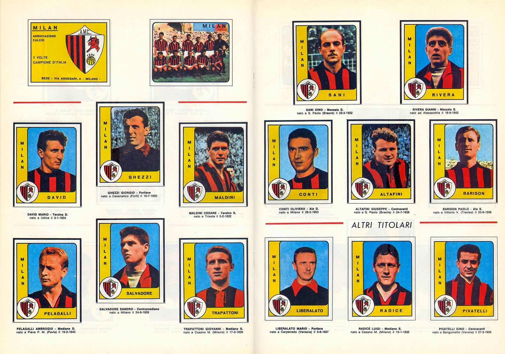
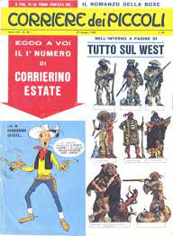
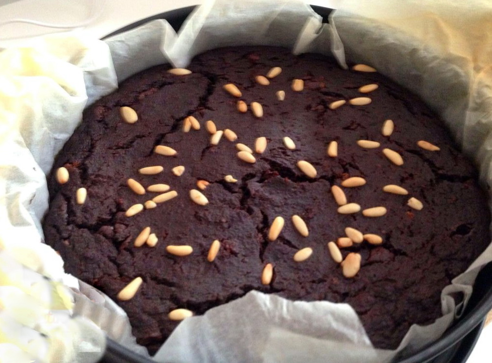
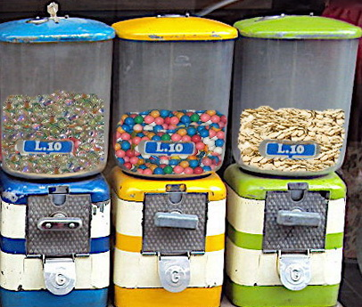
6. Trattorie e bar
I RICORDI DELLE TRATTORIE E DEI BAR NEGLI ANNI ’60.
In quegli anni non era consuetudine per le famiglie andare spesso al ristorante, si andava solo in occasione delle Cresime, delle Comunioni o dei matrimoni. Capitava qualche volta di essere invitato ad un pranzo o ad una cena con gli amici di papà in una delle trattorie di Vedano, quella che ricordo è Burdelen dove si mangiavano i tipici piatti brianzoli, come “la buseca” la trippa, “la casoela” il bottaggio alla milanese o “ul risot cunt i oss bus” il risotto giallo con gli ossi buchi di vitello. Naturalmente non mancavano mai gli affettati con il salame nostrano ed una abbondante dose di vino rosso per gli adulti. Le altre trattorie che ricordo erano tutte abbinate ai bar come “la demucrazia” ed “i compagni”. Entrambi gli esercizi avevano un giardino con i tavolini all’aperto e la bocciofila. Ricordo con piacere le serate passate con la famiglia e gli amici a giocare nei giardini di uno o dell’altro bar. A volte, alla domenica, tornando dall’oratorio mi capitava di incontrare il fratello di mio nonno che mi diceva “malnat ven chi a bef un quei cos” e mi invitava a bere una aranciata “in demucrazia”, se invece avessi trovato mio nonno mi avrebbe invitato a bere una spuma nera o un ginger “ai compagni”. Scendendo verso la piazza si trovava il bar/alloggio Capatti (il papà di Ricky) dove a volte entravo a comperare un gelato ed a vedere giocare al biliardo. Più avanti verso la chiesa c’era “il dopolavoro” che ospitava il club dei pescatori, ricordo che in estate organizzavano nel cortile un pranzo dove si mangiavano “i arborei” dei pesciolini fritti che venivano serviti nei piatti con sopra della carta che assorbiva l’unto. Risalendo per la via Piave all’inizio c’era il CAI ed all’angolo con vicolo Isonzo c’era “ul du” il nome sembra che derivi dal numero civico del bar, alcuni dicevano che il nome era motivato dal fatto che c’erano sempre due persone sedute nel bar. A Poldu c’era il bar “da ruset” (ul papà da pancino) il cui nome penso fosse legato al fatto che il proprietario aveva i capelli rossicci, ricordo che, sia lui ma soprattutto la moglie, erano due persone molto gentili. C’era poi all’incrocio tra “ul pruvincial” la strada provinciale, la via 4 Novembre e la via Montegrappa il bar “la campana” che aveva la sala bigliardo ed era molto noto per essere stato una sala da ballo con signorine di facili costumi.
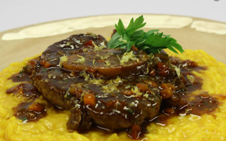
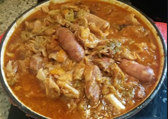
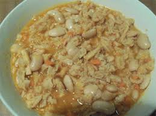
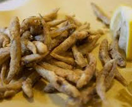
7. La scuola elementare
LA SCUOLA ELEMENTARE NEGLI ANNI ’60
La scuola elementare, intitolata a Giuseppe Parini, era in un edificio di forma rettangolare costruito nel dopo guerra. Al piano terra, con l’ingresso da via Italia, erano situati gli uffici comunali, in una parte del seminterrato si trovava l’ambulatorio medico, mentre al piano superiore c’erano le 10 classi, 5 “da bagai” di maschi e 5 “da tusan” di femmine. L’accesso alla scuola era in via Roma vicino agli orti del vecchio collegio, attraverso un grosso cancello si accedeva al cortile interno, poi salendo le scale al primo piano si entrava in un lungo corridoio che portava alle varie classi ordinate in ordine crescente da destra a sinistra. Noi alunni arrivavamo alla spicciolata tutti con la nostra blusa nera per i maschi ed il grembiule bianco per le femmine. Mezzi addormentati entravamo nel piazzale sterrato ed incuranti delle condizioni metereologiche aspettavamo il suono della prima campanella per metterci tutti allineati per due e per classe. Seguiva l'alzabandiera ed infine al secondo suono della campanella tutti in classe, naturalmente una classe alla volta dai più piccoli ai più grandi e senza fare confusione. Arrivati nella propria classe e nel proprio banco restavamo in piedi rivolti verso la cattedra posizionata su una pedana di legno e aspettavamo la canzone dell’Ave Maria. https://www.youtube.com/watch?v=8HiWKDRm_oE . Il suono che usciva dagli altoparlanti installati in ogni aula sembrava arrivare da oltre Oceano tanto era cupo e distorto. Poi iniziavano le lezioni. A metà mattino c’era un breve intervallo per una pausa caffè degli insegnanti. Il caffè era preparato dai bidelli della scuola Adelaide e Ambrogio che oltre al caffè si occupavano di tutti gli altri lavori, dal portare i gessi per le lavagne, alla pulizia delle classi, alla cura dei bambini che si erano fatti male. In prima elementare abbiamo imparato a scrivere, naturalmente con penna pennino e … calamaio. I pennini erano principalmente di due tipi uno a goccia più comune ed uno a forma di abete, entrambi dopo un utilizzo limitato cominciavano a “grattare” sporcando il foglio e rendendo la scrittura difficoltosa. A volte capitava che l'inchiostro nel calamaio finisse e quindi si doveva chiamare il bidello per la “ricarica” che altro non era che una boccia con l’inchiostro che veniva versato nell’apposito contenitore inserito nel banco. L’insegnante della prima classe era una maestra che utilizzava la bacchetta per insegnare e per gestire gli scolari indisciplinati. Un episodio che mi è rimasto impresso, perché mi toccò personalmente, è la bacchettata ricevuta erroneamente sulla testa con rottura della bacchetta che era già incrinata per aver bacchettato le mani di Coper. Anche per la seconda classe avevamo una maestra e ci ha preparato per superare l’esame di seconda elementare. Le maestre scrivevano spesso sulla lavagna di ardesia con un gessetto e quando dovevano cancellare usavano un cancellino in stoffa, ricordo una volta che alla fine dell’intervallo mentre giocavamo a lanciarci il cancellino Giuanen ha lanciato il cancellino verso la porta proprio mentre la maestra entrava colpendola sulla faccia. Dalla terza classe abbiamo iniziato a scrivere con la penna stilografica ed abbiamo avuto come insegnante un maestro originario di Sant'Arcangelo di Romagna. Lui era l'incubo di tutti gli scolari soprattutto per la sua severità ed il suo spiccato senso della disciplina. I tre anni passati con lui sono stati molto formativi, spiegava bene, ci stimolava a raggiungere un livello di preparazione elevato, ma a volte i suoi metodi erano poco ortodossi. Ricordo un giorno di primavera, il maestro stava spiegando, gli uccellini cinguettavano fuori dalla finestra, Martino rapito dal loro canto si è girato per guardarli, probabilmente la sua distrazione è durata troppo perché il maestro gli si è avvicinato e con uno schiaffo gli ha raddrizzato la faccia. Altre volte quando qualcuno si distraeva o prendeva un brutto voto riceveva una nota ed un calcio sul sedere. Un'altra costrizione a cui eravamo soggetti era l'impossibilità di uscire dalla classe durante l'intervallo. Rimanendo in classe con gli spazi limitati capitava a volte di urtare i banchi, oppure come è successo una volta di urtarsi e di finire contro la cartina dell'Italia appesa al muro. Appena il maestro, rientrato dall'intervallo, si accorse che la cartina era rotta i due alunni coinvolti subirono una punizione esemplare (rigore di Mazzola-> tiro, potente calcio sul sedere, goal-> risultato la gamba di Birillo rimase gonfia per giorni). La fine delle lezioni era scandita dal suono della campanella, riempivamo la cartella al più presto e ci riunivamo davanti all’oratorio maschile per la corsa fino all'asilo. Da lì poi ognuno prendeva la propria strada per casa. Dalla terza classe in avanti, nel salone del seminterrato, avevamo le lezioni di ginnastica. Il maestro di ginnastica, che aveva vinto una medaglia di bronzo ai campionati italiani, ci preparava per il saggio di fine anno scolastico. Ricordo con piacere il saggio fatto alla fine della quinta, dopo aver cantato l’inno nazionale ed aver fatto gli esercizi a corpo libero, abbiamo fatto una coreografia con l’ausilio degli appoggi di legno. Alcuni giorni della settimana tornavamo in classe anche nel pomeriggio per fare il doposcuola.
Credo che per tutti noi gli anni passati alle elementari ed all’oratorio, di cui parlerò nel prossimo post, siano stati i più spensierati della vita.
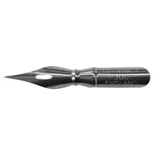
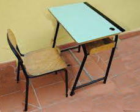
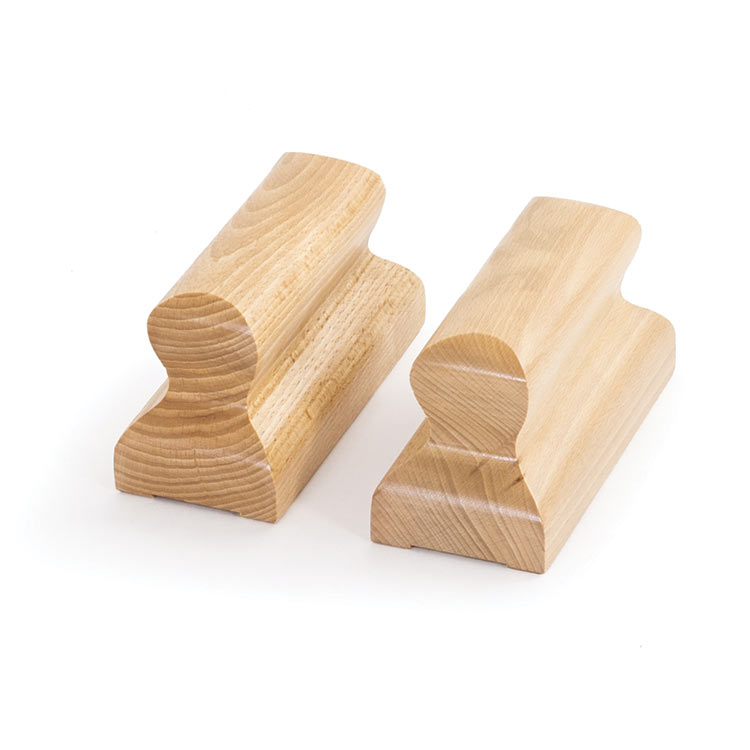
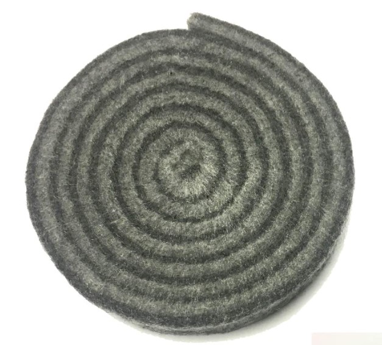
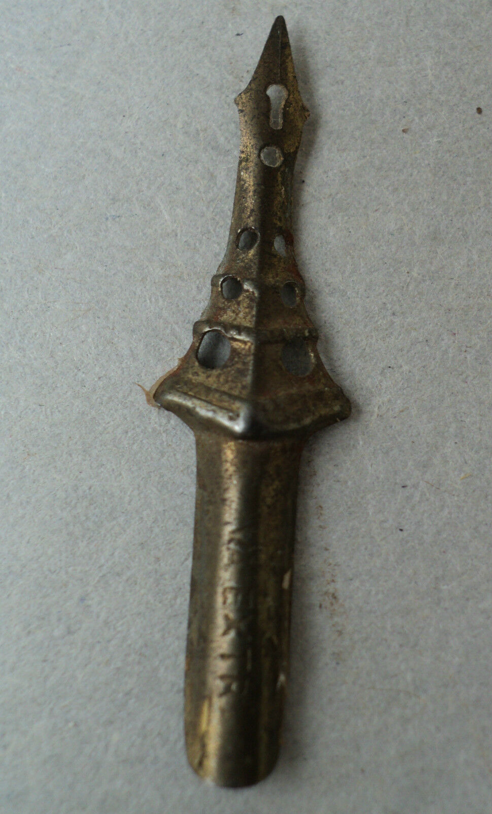
8. Gli oratori
GLI ORATORI NEGLI ANNI ’60
Il primo oratorio che abbiamo frequentato era quello delle femmine sito in via Piave perché i bambini che non avevano ancora fatto la comunione non potevano andare all’oratorio maschile. L’oratorio femminile era gestito dalle stesse suore che gestivano l’asilo. I ricordi sono un po' sbiaditi ma mi è rimasta impressa la bustina di farina di castagne. Quella polvere di castagne era come una pozione magica, già prima di aprirla si poteva sentirne il profumo, si apriva la bustina con attenzione per non farla cadere e si iniziava a immetterla direttamente in bocca. Quando la bustina era quasi finita si cercava di far scendere la parte rimanente inclinandola il più possibile ed il più delle volte la farina cadeva tutta di botto riempendo la gola e provocando una tosse goffa che ci costringeva a correre alla fontana per bere un po' di acqua.
Poi è arrivato il momento dell’oratorio maschile, dedicato a San Luigi, situato in via Santo Stefano. L’ingresso era chiuso da un portone che veniva aperto solo in occasioni particolari, quindi si accedeva all’interno del porticato da una piccola porta sempre aperta ricavata nel portone. Tutti i pomeriggi liberi dei giorni feriali, dopo aver fatto di corsa i compiti, noncuranti delle condizioni metereologiche ci trovavamo all'oratorio maschile. Naturalmente il gioco più gettonato era “al balon” a calcio nel campo a 7, si formavano due squadre con lo stesso numero di giocatori, se qualcuno fosse dovuto andare a casa sarebbe stato sostituito da chi arrivava dopo e si giocava fino all’ora di cena. Chi non giocava a calcio si divertiva con i giochi più disparati, da “Stopa boech” dietro la porta del campo di calcio a 7 al confine con la montagnetta (qualcuno ha riempito la buca con il suo posteriore), a “Dentar bus fora bus a la cà”, oppure a cavallina o a “busa” che consisteva nel prendersi con “ i cichet” le biglie utilizzando una delle piccole buche che erano state scavate sotto gli alberi delle magnolie; durante le brutte giornate, sotto il portico in discesa all'ingresso dell'oratorio, si giocava con le biglie a “ vuna al des” con la biglia dello Stock. Poi sono arrivate le figurine dei calciatori (Panini) e si giocava a chi le lanciava più lontano o a farle cadere una alla volta appoggiandole al muro fino a che una figurina si sovrapponeva ad una già a terra. La domenica pomeriggio era una giornata diversa dalle altre perché prima bisognava andare tutti a dottrina e poi perché il bar era aperto e si poteva giocare a carte (diavul, pepa tencia, ruba masett) al ping pong, al tam tam o a calcetto. Durante le vacanze scolastiche Don Luigi Zoia organizzava un'oratorio feriale che era uno spasso. Il bar era aperto tutti i giorni, i ragazzi più grandi organizzavano diversi giochi e tornei che ci impegnavano per tutto il giorno. Ma il momento più atteso era il primo pomeriggio nella sala cinematografica della villa Zendali; Don Luigi dopo averci fatto recitare le preghiere, ci proiettava le diapositive del giro di Zoolandia e ci leggeva tutti i divertenti commenti. Un’altra bella giornata era la festa di San Luigi nel “campo a 11” dove si tenevano i giochi campestri che includevano la famosa corsa nei sacchi ed alla fine c’era la cuccagna. Anche se noi piccoli non potevamo partecipare attivamente, facevamo il tifo per una o per l’altra squadra che cercava di raggiungere le cibarie collocate sulla cima di un lungo palo infisso nel terreno. La difficoltà era aumentata dal fatto che il palo era cosparso di grasso che lo rendeva scivoloso. Le squadre a turno cercavano di far raggiungere la cima del palo della cuccagna al componente più agile della squadra per accaparrarsi i premi migliori.
Verso la fine degli anni ’60 era iniziata la costruzione del nuovo oratorio al posto di quello esistente, quindi per un certo periodo non era stato accessibile; ci siamo quindi organizzati con altri passatempi e giochi che racconterò nel prossimo post.
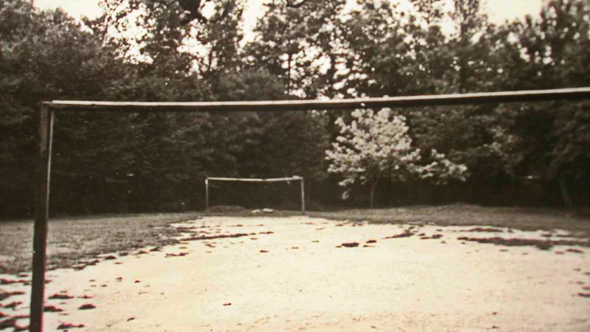
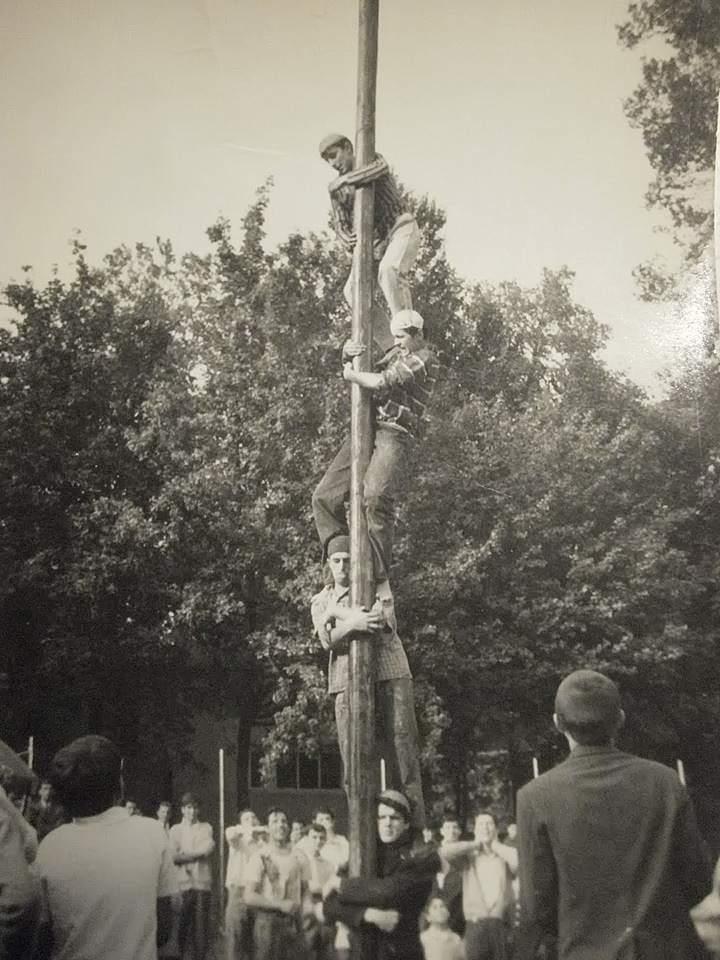
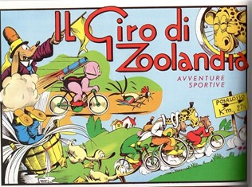
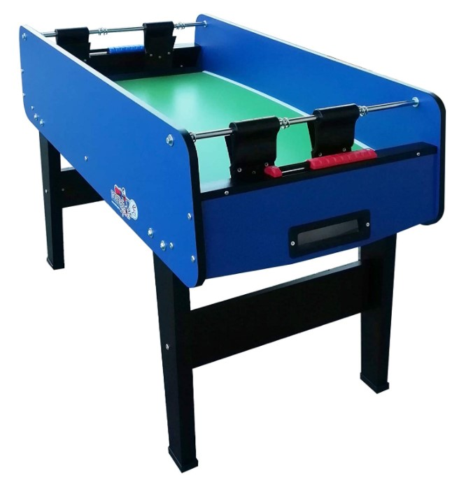
9. Passatempi e giochi
ALTRI PASSATEMPI E GIOCHI NEGLI ANNI ’60
Quando non andavamo all’oratorio ci incontravamo a casa di qualche amico, facevamo i compiti e se avesse piovuto saremmo restati in casa a giocare a carte o ai giochi di società, altrimenti uscivamo per giocare all’aperto. I giochi delle carte che più ci piacevano erano “set e mes”, “diavul”, “strascia camisa” e “pepa tencia”. A “set e mes” le puntate erano fatte con i soldatini di carta, che a seconda della dimensione e della qualità avevano valori diversi; a “diavul” ricordo che chi vinceva il giro chiedeva agli altri giocatori il seme della carta che estraeva dal mazzo ed il giocatore doveva indovinarne il seme, se sbagliava accumulava le carte fino a quando non avesse indovinato il seme, dopo di che il vincitore utilizzava le carte non indovinate per grattare il braccio del giocatore, in questo il Vichingo si distingueva per avere la mano pesante. Il gioco di società più gradito era il MONOPOLI, ci giocavamo interi pomeriggi e ci divertivamo tantissimo. Quando uscivamo per la strada giocavamo spesso a calcio oppure nei cortili “a purtin” a portine; il gioco simile al calcio non era però diviso in squadre ma ognuno giocava contro tutti gli altri, ciascuno sceglieva una porta, che naturalmente nelle corti erano numerose, e si cominciava a giocare col pallone per segnare in una delle porte degli avversari, naturalmente vinceva chi subiva meno goal. Un altro gioco che ci appassionava era “tumben”, era un gioco di biglie che veniva praticato sui tombini di ghisa o di cemento delle varie utenze. I tombini erano sagomati e creavano dei percorsi che si intrecciavano creando delle piste dove far scorrere le biglie, si tirava a turno e chi colpiva la biglia di un avversario se la teneva. Naturalmente sia a “purtin” che a “tumben” la confusione ed il baccano che si creava potevano disturbare le persone che a volte ci sgridavano o ci gettavano delle secchiate di acqua per farci allontanare. C’erano poi dei giochi che venivano praticati più spesso in alcuni cortili, penso che le dimensioni avessero la loro importanza, per esempio a Poldu si giocava spesso “a scrima o spiorla o lippa”, una specie di baseball nostrano che si praticava con un pezzo di legno (scrima) della lunghezza di 10-15 cm normalmente ricavato da un manico di scopa con le estremità coniche ed un bastone che colpendo la scrima su una estremità la faceva alzare da terra per poi colpirla e lanciarla lontano. Per chi doveva iniziare a giocare si faceva la conta e quando capitava che alcune decisioni erano dubbie si risolveva con un “bim bum bam” pari o dispari. Nella bella stagione andavamo nel parco alla discesa della RAI ciascuno con il suo “cariasc” a fare la gara a chi andava più lontano, oppure andavamo “al funtanen” un fontanile a far la gara a chi raccoglieva più “cusot” i girini e sempre lì in estate ci dividevamo in due squadre, ciascuna su una sponda del fontanile e giocavamo a gettare i sassi nell’acqua per bagnarci a vicenda. Sempre nel Parco, con la nostra bicicletta con una cartolina agganciata con una molletta per produrre il rumore di un motorino, andavamo verso Villasanta ai “tri cunet” a fare la corsa con le macchinine di F1; per arrivare primo c’era chi la truccava appesantendola per renderla più stabile e più veloce. In autunno con la fionda, realizzata con striscie “da budel” la camera d’aria della bicicletta o per i più abbienti da elastici di para, andavamo al galet oppure al golf per lanciare i sassi sui ricci delle castagne e farle cadere a terra. Sempre con anelli intrecciati della camera d’aria della bicicletta si realizzavano gli elastici per i fucili di legno che avevano sulla punta un chiodo su cui si agganciava l’elastico e sull’altra estremità una molletta da bucato che tratteneva l’elastico, premendo sulla molletta l’elastico partiva e si cercava di colpire l’avversario. Per fare delle battaglie tra squadre un’alternativa al fucile di legno era la cerbottana caricata con frecce fatte di strisce di carta di recupero ed arrotolate attorno al dito per creare dei coni che venivano fissati con la saliva; naturalmente, se fosse nevicato, le battaglie le avremmo fatte a palle di neve. Se c’erano anche “i tusan” le bambine i giochi erano differenti, a carte si giocava “a famiglia”, con la palla “a palla avvelenata”, oppure si giocava al girotondo, “a taga le”, a bandiera, a saltare la corda, a “un, due, tre stella”, con lo spago a ripiglino, a “acqua, fuoco, fuochino” o al mondo. Quest’ultimo gioco richiedeva una certa agilità ed equilibrio, si iniziava disegnando a terra o su un marciapiede le caselle del gioco e si tracciavano i numeri da uno a sette all’interno delle caselle. Ciascun giocatore si muniva di un sasso che doveva lanciare nelle varie caselle numerate dal numero uno al numero sette e saltellando su di un solo piede senza calpestare le righe che delimitavano le caselle doveva andare a recuperare il sasso e ritornare all’inizio. Altri passatempi, di cui oggi non ne vado fiero, era andare a suonare i campanelli a certe persone, oppure integrare la raccolta di scudetti, distribuiti durante le gare automobilistiche che si svolgevano in autodromo, staccandoli dalle macchine parcheggiate in ogni angolo del paese ed a volte provocando anche dei danni alla verniciatura. Sempre restando in tema di autodromo, oggi non ritengo corretto quello che spesso facevamo saltando le mura di “ca Litta” per entrare a vedere le corse senza pagare e sentendosi in diritto di farlo perché parte del terreno su cui era stato costruito il circuito era di proprietà del nostro comune, o forse perché erano i tempi in cui tutto era dovuto “a gratis” gratuitamente come per i concerti.
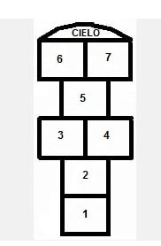
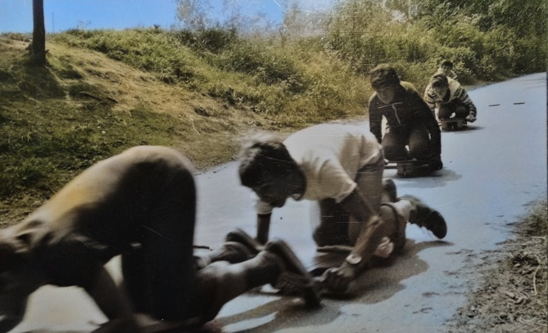
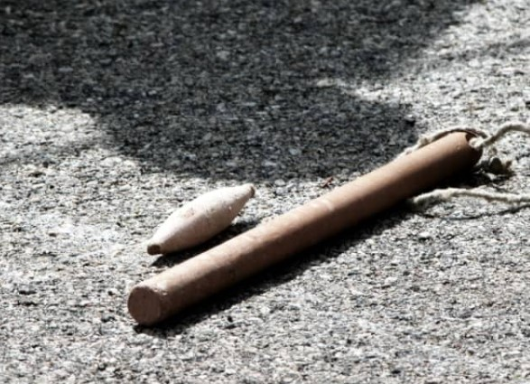
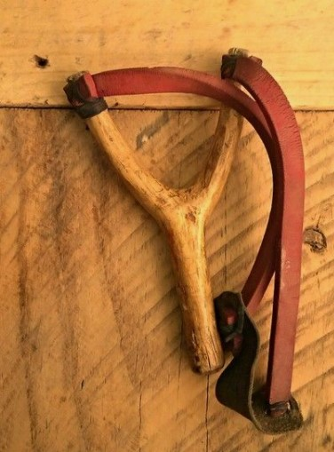
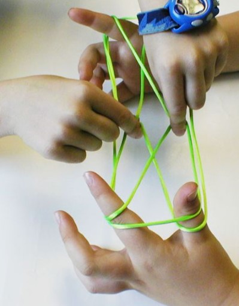
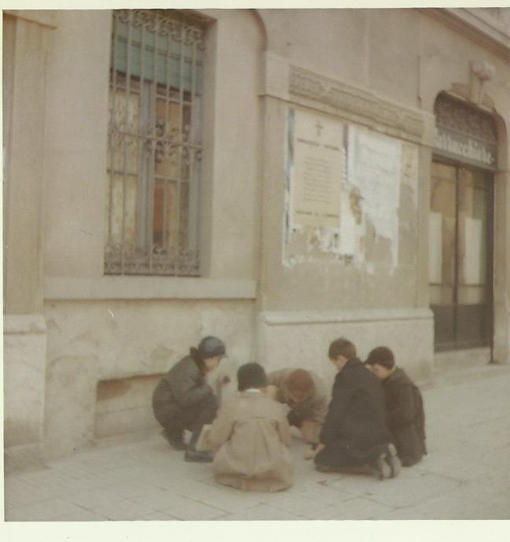
10. Autunno e Inverno
LE STAGIONI (Autunno e Inverno).
Come per tutte le persone, anche per noi ragazzi, le stagioni scandivano il passare del tempo e il susseguirsi di eventi che plasmavano la nostra vita. Vorrei cominciare con la stagione per me meno bella, l’Autunno. Il primo di ottobre, San Remigio, iniziava la scuola (dal suo nome deriva il termine “remigini” che veniva dato ai bambini di prima elementare), era bello ritrovare tutti i compagni, ma la vacanza era finita. Alla prima domenica di ottobre c’era una delle ultime occasioni per festeggiare tutti insieme, la Festa del Paese. Il giorno della festa si andava a messa e poi ogni gruppo familiare si riuniva per il pranzo alla cui fine non mancava mai la torta paesana. Nel pomeriggio si andava all’oratorio per la pesca di beneficenza, col pagamento di 100 Lire si estraeva un biglietto da una grossa boccia di vetro e si vinceva il premio contrassegnato dal numero scritto sul biglietto. Qualche giorno prima della festa arrivavano le giostre, le più frequentate erano l’autoscontro che funzionava con dei gettoni di plastica, la giostra a catena o calcio in culo che regalava un giro a chi riusciva ad afferrare il fiocco attaccato ad un pallone posizionato in alto, i dischi volanti che avevano una cloche per farli salire in alto ma che se venivano colpiti dal raggio di un avversario scendevano in basso, la giostra dei piccoli con i cavallini che andavano su e giù; c’era poi il tiro a segno con la carabina che se si centrava l’obiettivo faceva la fotografia. Con le palline da ping pong si vinceva un pesciolino rosso se si riusciva ad entrare in una delle bocce di vetro posizionate a circa un metro di distanza e naturalmente, c’erano sempre le bancarelle con i dolciumi. Poi, passata la festa, iniziavano ad accorciarsi le giornate, nelle poche soleggiate andavamo nel parco a raccogliere le castagne, poi arrivava il mese di novembre che se non avesse piovuto ci sarebbe stata la nebbia. La nebbia era così fitta che non si riusciva a vedere più di qualche metro davanti a noi. A dicembre iniziavano le gelate notturne ed a volte il termometro non saliva sopra lo zero nemmeno durante il giorno. Il 1 novembre si portavano i fiori al defunti per il giorno dei morti e poi il 4 novembre si celebrava la fine della prima guerra mondiale con una processione che arrivava fino al cimitero. Spesso i fiori portati per la ricorrenza dei morti erano appassiti perché durante la notte la temperatura andava sotto lo zero, e ricordo che una volta durante la processione scendevano dei fiocchi di neve. Finalmente arrivava l’Inverno che portava il Natale con le sue feste ed i suoi doni (Monopoli, Giochi riuniti, autopista per “i bagai”, bambole per “i tusan”). Arrivava a volte anche la neve che rendeva l’atmosfera ovattata ed era divertente uscire a giocare a palle di neve con gli amici. Le lunghe serate invernali le trascorrevamo in casa a giocare con i fratelli e con i genitori alle carte, alla dama o agli scacchi (molto in voga perché era il periodo della sfida tra Boris Spassky dell’Unione Sovietica e Robert James Fischer degli Stati Uniti). La prima occasione per uscire la sera era per la festa di Sant’Antonio, per questa ricorrenza nei vari rioni del paese venivano preparate tante cataste di materiale da ardere che alla sera venivano incendiati creando per il paese “una luce che rischiara le tenebre”: il falò.
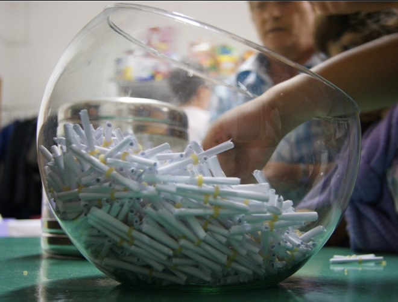
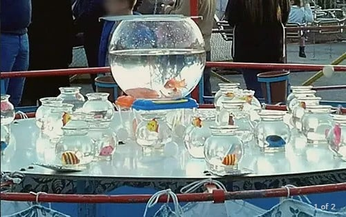
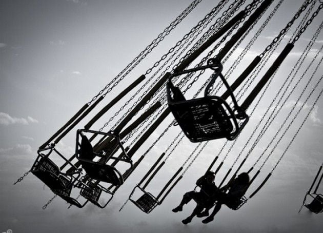
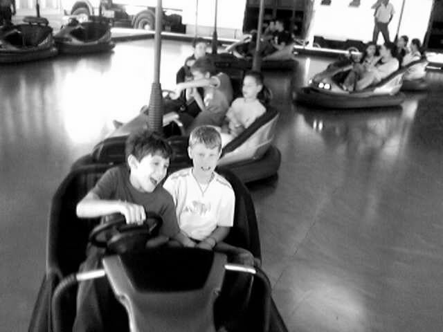
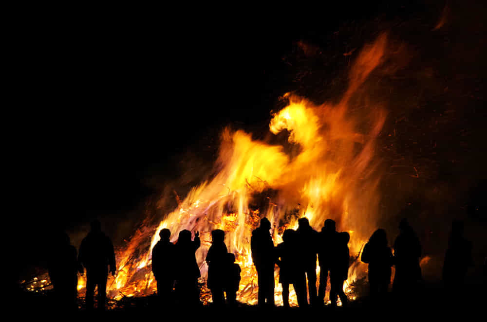
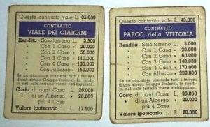
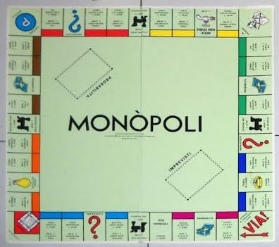
11. Primavera e Estate
LE STAGIONI (Primavera ed Estate).
Finalmente dopo l’inverno arrivava la primavera, agli inizi di marzo l’aria cominciava ad essere meno gelida e più frizzante, le giornate si allungavano ed iniziavano ad arrivare le prime rondini (San Benedetto la rondine sotto il tetto). Le rondini ritornavano sempre nello stesso nido costruito sotto i tetti o sotto “ul purteghet” il porticato che immetteva nelle corti. Cominciavano a fiorire le prime piante come le magnolie che fanno i fiori prima delle foglie e poi a mano a mano tutta la natura riprendeva vita. Il mese di aprile ci portava giornate splendide alternate a giornate piovose e quasi invernali, motivo per non cambiare l’abbigliamento (“april spuglias da nanca un fil”). Poi arrivava la giornata delle palme ed “i cereghet” i chierichetti, organizzati da Giuan Gabet e da Ambroes che guidava “ul furgunen”, portavano i rametti di ulivo benedetto nelle case del paese. Nel giorno di Pasqua tutte le famiglie si riunivano per mangiare le lasagne, il capretto e poi la colomba; per i bambini il momento più eccitante era l’apertura dell’uovo di cioccolato con al suo interno una sorpresa. Normalmente la sorpresa era un portachiavi o un braccialetto, allora ci si accontentava di mangiare il cioccolato. Nella giornata del 25 aprile, Festa della liberazione, il CAI organizzava sempre una gita al Pian dei Resinelli, la maggior parte delle volte il tempo era piovoso e freddo, ma era bello stare in compagnia con altri amici ed alla sera al ritorno sul “pullman”, l’autobus, gli uomini quasi tutti un po' alticci cantavano le canzoni della guerra (Il Piave mormorò, Bella ciao, Il testamento del Capitano, Ta-Pum, Quel mazzolin di fiori, ..). A maggio le giornate si allungavano, la temperatura era gradevole e, tempo permettendo, si cominciava ad uscire anche alla sera per giocare con gli amici. Nei cortili, a turno, si recitava il rosario per il mese della Madonna. La Domenica di Pentecoste si celebrava la festa della Madonna della misericordia, c’era una processione che portava dalla chiesa parrocchiale al santuario, la prima parte della strada era asfaltata ma la parte finale era una strada sterrata con a fianco le robinie. Per l’occasione nel giardino del santuario c’era la pesca di beneficenza, molte bancarelle di giocattoli e di dolciumi che vendevano anche la “mana”. In un angolo il dopolavoro allestiva un piccolo ristorante dove si potevano mangiare i pesciolini fritti e naturalmente per gli adulti tanto vino. Nel campo al di là della strada c’erano sempre “i baracuni” le varie giostre come l’autoscontro e la giostra a catene. Il mese di giugno era il più bello perché finivano le scuole e si poteva restare a lungo a giocare nei campi, “al balon” al calcio oppure a saltare sui covoni di fieno, o a catturare le lucertole con i fili di erba fatti a cappio. A volte giocavamo ad infilare nella schiena degli amici delle spighe di erba che con il movimento si spostavano ed erano difficili da togliere. A luglio, tutti all’oratorio feriale per un mese spensierato. Mi ricordo in particolare le gite fatte al Parco per i giochi a squadre per conquistare la bandiera delle squadre avversarie, oppure le gite fatte in bicicletta agli oratori di Lissone o della Canonica, dove facevamo varie competizioni, tra le quali la partita di calcio. Per tutto il mese di agosto era consuetudine andare al mare o in montagna, il paese si svuotava quasi completamente e per i pochi rimasti era difficile trovare un negozio aperto anche per i generi di prima necessità.
Nel mese di settembre le giornate si accorciavano e restava poco tempo per giocare, i compiti delle vacanze che erano stati sempre rimandati nei mesi precedenti erano ormai da svolgere. A volte ci si trovava a casa degli amici per fare insieme i compiti, ma la resa era praticamente nulla. Sui “bersò” cominciava a maturare l’uva americana, si cominciava a verificare la cancelleria e i quaderni, si ordinavano i libri, si provava la blusa che naturalmente doveva essere sistemata o sostituita e ci si preparava ad andare a scuola. Da noi bambini la scuola era percepita come un dovere ma non come un piacere, è con il passare degli anni che ho capito quanto sia importante avere una buona educazione scolastica soprattutto nelle scuole elementari (adesso le chiamano primarie). È importante che i maestri e le maestre oltre che insegnare la didattica facciano scattare negli studenti la passione per lo studio e la bellezza di imparare sempre cose nuove.
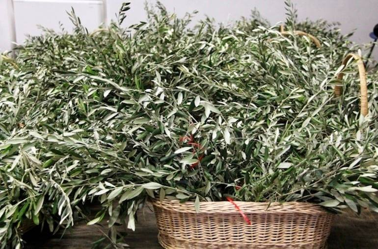
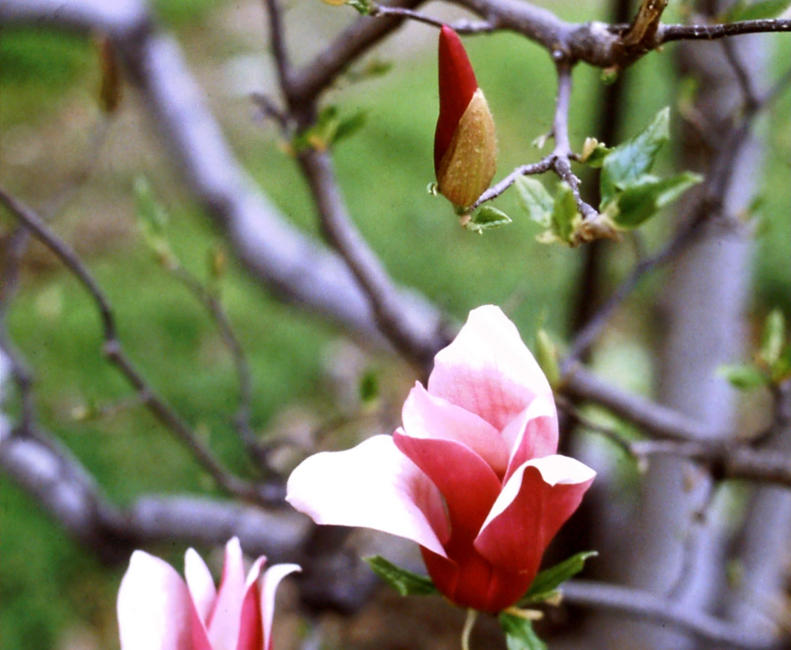
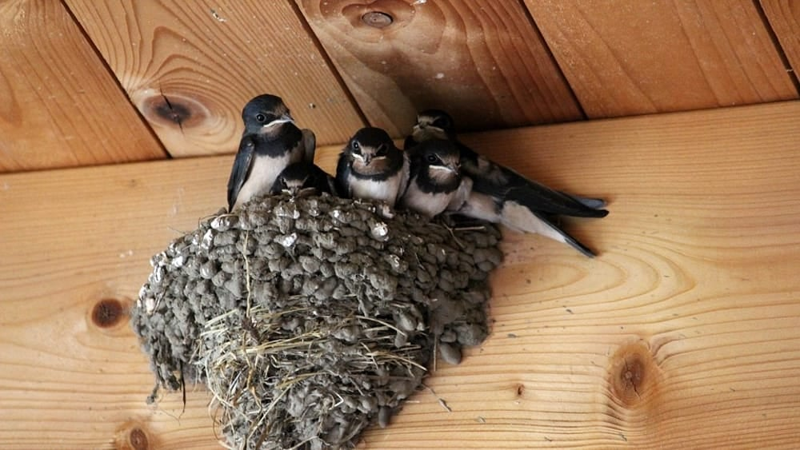
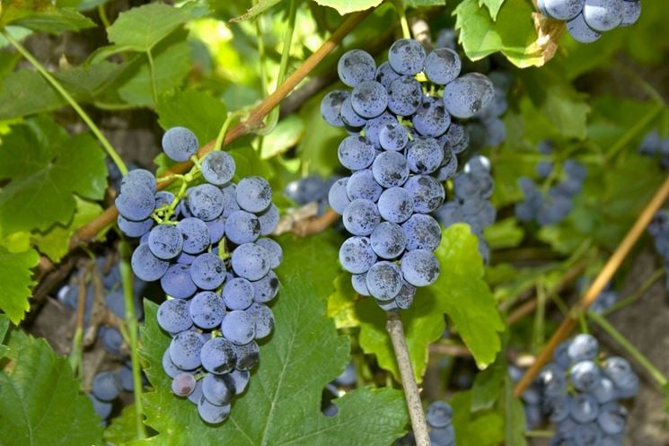
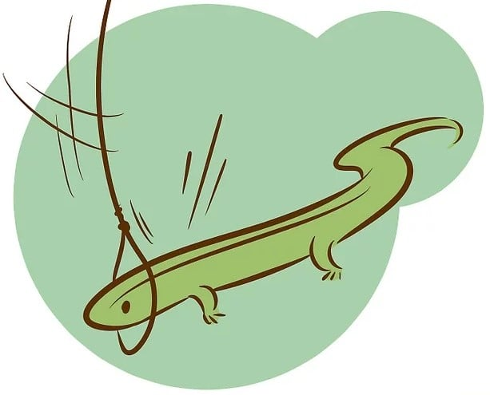
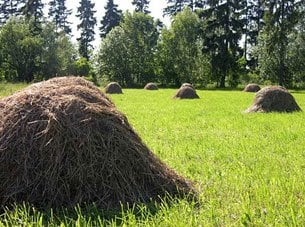
12. Il cinema Parco
IL CINEMA PARCO
Ricordo con piacere quando mio papà mi portava al nuovo cinema Parco. La struttura, appartenente alla chiesa, era stata inaugurata con una grande cerimonia dall’allora Cardinal Montini, poi diventato Papa Paolo VI. La platea era grande e la galleria ancora di più, il palco con dietro lo schermo era grandissimo.
A differenza della televisione, che era solo in bianco e nero, i film che venivano proiettati erano quasi tutti a colori, era uno spettacolo incredibile. Anche se i film in programmazione erano già stati visti da anni in America e poi nelle grandi città italiane, per noi “paisan” era come se fosse appena uscito. Molti film erano ambientati nel Far West oppure rappresentavano vicende storiche e religiose, ricordo: “Per un pugno di dollari”, “Il buono, il brutto, il cattivo”, “Il ponte sul fiume Kwai”, “Ben Hur”, “I dieci comandamenti”, “Don Camillo”. Durante le proiezioni capitava che la pellicola si bruciasse e tutti al buio cominciavano a fischiare in segno di protesta e per avvisare il macchinista del guasto; quindi, si doveva aspettare per un po' di minuti ed il film riprendeva. Tra il primo ed il secondo tempo facevamo tutti la fila al bar per acquistare stringhe di liquirizia, “straca dinc”, “cicche” ed ogni sorta di dolciumi. La sala era utilizzata anche per esibizioni teatrali, esibizioni musicali delle varie bande e canore dei vari cori alpini e polifonici, in particolare ricordo il “famoso” coro Cembul diretto dal maestro Sandro Meregalli. Se ricordo bene, la sala aveva anche ospitato una tappa del il Cantagiro il festival che ha fatto la storia della musica italiana. Purtroppo, da anni la struttura è abbandonata e le varie amministrazioni comunali che si sono susseguite non sono state in grado di rivalorizzarla, oggi la sola soluzione è di abbatterla.
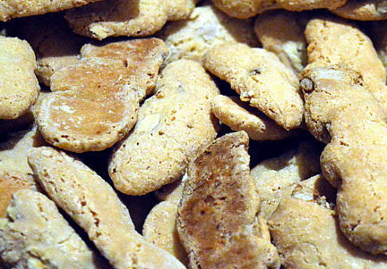
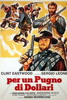
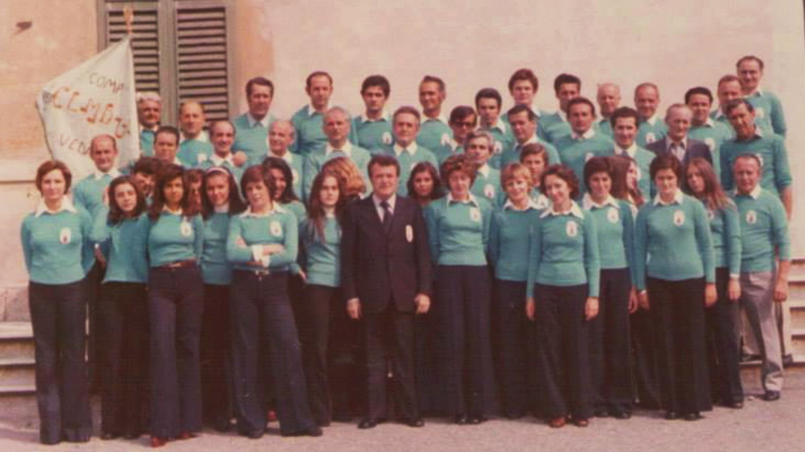
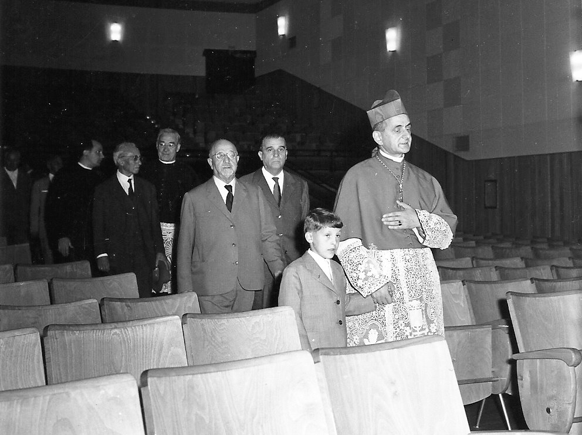
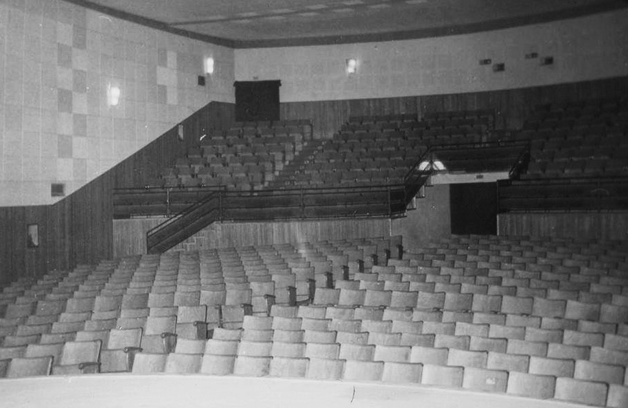
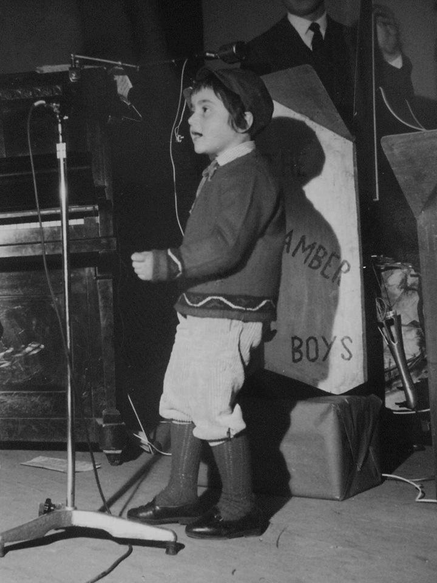
13. La scuola media inferiore
LA SCUOLA MEDIA INFERIORE
In Italia dal 1963 fu istituita la scuola media unificata che integrava anche la scuola professionale ed era stato inserito l’obbligo di frequenza fino ai 14 anni, ma nel paese la scuola media non era ancora disponibile, solo qualche anno dopo fu ospitata nelle aule dell’oratorio femminile. Fortunatamente, proprio nell’anno in cui finimmo la scuola elementare, la scuola media fu spostata al piano superiore del nuovo oratorio maschile appena completato. Oltre alle aule nuove, disponevamo anche di una bellissima palestra con gli spogliatoi. Il pavimento era fatto di linoleum, sulla parete più lunga, c’erano le pertiche, le corde ed il quadro svedese. A differenza della scuola elementare, dove avevamo un solo insegnante, alla scuola media c’erano professori che si alternavano durante la giornata. In prima classe, per la prima volta nel paese, fummo divisi in sezione A maschile, B femminile e C mista. Non c’era più l’obbligo di indossare una divisa, anche se molte ragazze portavano ancora un grembiule. La cartella non era più di moda ed aveva lasciato il posto ad una cinghia elastica agganciata alle due estremità per tenere insieme i libri, il diario ed i quaderni; era scomodissima ma ci faceva sentire grandi anche se portavamo ancora i pantaloncini corti. Le materie di studio, oltre alle classiche Lettere e Matematica, comprendevano Applicazioni tecniche, Francese, Religione, Educazione fisica, Educazione artistica, Educazione musicale.
Ricordo con piacere la costruzione di una nave di legno fatta durante il primo anno di applicazioni tecniche con il mio amico “biraghen”.
In seconda media, dopo un lungo dibattito politico, era stato inserito lo studio del Latino (elementi) che però non diventava materia di esame finale della terza media; oggi il latino non viene più insegnato nelle scuole medie inferiori, ed anche se questo è un tema travagliato, ritengo utile insegnare sia la cultura tecnica che la cultura umanistica.
Un fatto increscioso avvenne al professore di Applicazioni Tecniche che trovò due ruote della sua macchina tagliate ed accusò tutta la classe del misfatto. Era proprio fuori dai gangheri e ci ricoprì di improperi: “figli di cane, delinquenti, disgraziati, …”.
Un episodio che mi amareggiò fu un colloquio con la preside. Il motivo fu un compito in classe di matematica che avevo svolto in maniera corretta ma non utilizzando il processo che la professoressa ci aveva insegnato. Alla mia richiesta di spiegazione l’insegnante mi disse che se avessi avuto qualche cosa da ridire sarei dovuto andare dalla preside, e così feci. La preside molto gentilmente mi spiegò: “Per fare un maglione di lana si possono utilizzare vari punti, il punto di riso, quello a dama, quello scozzese ed ottengo sempre un maglione ma differente per ogni tipo di punto”. In quel momento non gradii la spiegazione, ma oggi credo di aver capito la differenza.
In terza media furono introdotte delle lezioni di Educazione sessuale, anche se nelle classi giravano delle copie di giornaletti un po' spinti (Caballero), la maggior parte di noi era imbarazzata da questi argomenti. Alcuni ragazzi più intraprendenti facevano delle domande che però il più delle volte erano degli stupidi commenti.
Gli anni spensierati con gli amici di infanzia erano ormai alle spalle, le materie di studio richiedevano più impegno, il gioco del calcio era strutturato con allenamenti e partite, alcuni amici si erano iscritti alla scuola di atletica, cominciavamo a guardare le ragazze con uno sguardo diverso, insomma “serum adrè a maruà” stavamo crescendo. La situazione politica stava cambiando, e anche se ancora lontani, si cominciavano a sentire gli echi della contestazione.
14. I complessi rock
I COMPLESSI ROCK
Era il 1967 ed al Festival di Sanremo vincevano Iva Zanicchi e Claudio Villa, i cantautori cominciavano a fare la loro comparsa anche se alcuni di loro si sentivano incompresi tanto da arrivare al suicidio come Luigi Tenco o al tentativo di suicidio di Gino Paoli. A livello internazionale i Beatles raccoglievano successi ovunque ed anche in Italia tutti i giovani sognavano di suonare in un complesso. I festival canori erano sparsi ovunque e la maggior parte dei partecipanti erano complessi rock che spesso si esibivano suonando canzoni di complessi stranieri ma con le parole in italiano, alcuni esempi sono: “Senza luce” cantata dai Dick Dick il cui titolo originale era “A Whiter Shade Of Pale” cantata dai Procol Harum, “Sognando California” sempre cantata dai Dick Dick il cui titolo originale era “California Dreamin’” cantata dai The Mamas & The Papas, oppure “Pomeriggio ore 6” dell’Equipe 84 il cui titolo originale era “Marley Purt Drive” cantata dai Bee Gees. I primi complessi rock nostrani che ricordo sono: gli Shinings con Angiolino ed i Boma. Anche mio cugino Censen suonava la pianola in un complesso dove c’erano Pancino alla batteria, Sergio e Michele alle chitarre. Si ritrovavano a fare le prove a Poldu ed appena potevo andavo ad ascoltarli. Tutti i giovani si lasciavano crescere i capelli e non passava giorno che non si sentiva dire “taia i cavei capelon”. Non esistevano le radio libere e tantomeno internet quindi le canzoni si potevano ascoltare alla radio o alla televisione sulle reti RAI oppure nei bar dove c’era un juke-box. Chi poteva permetterselo sentiva i dischi sul giradischi di casa, ma la vera rivoluzione fu il mangiadischi che era più economico e permetteva di ascoltare i 45 giri di vinile in qualsiasi posto. È stato un periodo indimenticabile, c’era un fermento nell’aria di novità, di cambiamento, di voglia di vivere e di rompere gli schemi. L’apice fu il Festival di Woodstock nel 1969 che creò una spaccatura tra l’establishment ed i giovani. Però tutta quella voglia di libertà e di evasione ha anche portato ad uno dei più grandi drammi della nostra storia, l’utilizzo proletario delle droghe leggere e di quelle pesanti che hanno portato molti giovani a rovinarsi ed a rovinare le loro famiglie.
15. La Televisione
LA TELEVISIONE
Prima degli anni ’60 si andava a vedere la televisione nei bar perché non tutti potevano permettersela. Poi con il progresso dell'economia, i prezzi dei televisori iniziarono ad essere più accessibili e sempre più persone ebbero la possibilità di acquistarla. La programmazione ufficiale rivolta al grande pubblico cominciò nel 1954 con l'inaugurazione del primo canale televisivo italiano, ma fu dagli anni ’60 che furono disponibili 2 canali televisivi che trasmettevano in UHF o VHF. I primi programmi avevano un notevole ruolo culturale e finalità educative. Visto l'elevato tasso di analfabetismo in quegli anni la RAI mise in onda il programma “Non è mai troppo tardi” condotto dal maestro Alberto Manzi che aiutò quasi un milione e mezzo di cittadini italiani a conseguire la licenza elementare. Attraverso la televisione degli anni ’60 venne creata una cittadinanza che condivise tradizioni e conoscenze; questo è stato il tratto caratterizzante che l’ha resa così celebre e benvoluta. Nel 1962, vi fu il primo collegamento via satellite tra Italia e Stati Uniti, che segnò l'avvento della comunicazione interplanetaria, permettendo di assistere a eventi fondamentali della storia contemporanea in diretta. Ricordo le tre sfide tra il pugile Nino Benvenuti e il pugile americano Emile Griffith per il titolo mondiale dei pesi medi. Considerata di serie B rispetto alla radio, nella notte del 20 luglio 1969 le sorti si ribaltarono, la televisione trasmise in diretta lo sbarco di Neil Armstrong sulla luna, i giornali arriveranno solo 36 ore dopo. Ricordo anche la storica partita di calcio Italia Germania che finì con la vittoria della squadra italiana per 4 reti a 3. In occasione dei mondiali di calcio del 1970 iniziarono in via sperimentale le trasmissioni a colori. Il sistema di trasmissione non era ancora stato deciso se sarebbe stato il francese SÉCAM o il tedesco PAL. Nel campo dell’informazione il programma TV 7 iniziò l’ascesa di questo mezzo comunicativo. L’affermazione economica della televisione avvenne con il celebre programma Carosello messo in onda subito dopo il Telegiornale, per i bambini era l’ultima trasmissione che si poteva vedere perché: “dopo Carosello tutti i bambini a nanna”. Gli spot di quegli anni restano nella memoria di tutti. Chi non ricorda il tenete Sheridan, Calimero pulcino nero che diceva “Ava come lava”, Mariarosa con il lievito Bertolini, Cinar contro il logorio della vita moderna, la Brillantina Linetti, la dolce mammina del miele Ambrosoli, Gino Bramieri con Moplen e poi l’omino in ammollo, la mucca Carolina, Ercolino sempre in piedi e tanti altri. Con il passare degli anni, profitto scolastico e compiti permettendo, ebbi la possibilità di vedere anche alcuni sceneggiati come: “La Cittadella” con Alberto Lupo, “I Miserabili” e “La freccia nera” con Loretta Goggi e poi il sabato sera Studio 1 con Mina, Manfredi Don Lurio e le gemelle Kessler che cantavano “Da Da Un Pa” quindi la domenica pomeriggio con “Quelli della domenica” uno dei primi programmi di rottura con “Cochi e Renato” e poi Paolo Villaggio con esilaranti personaggi come il Professor Kranz, Fracchia ed il famosissimo Ugo Fantozzi. Ricordo anche il colonello Bernacca che nella trasmissione “Che tempo fa?” ci illustrava con semplicità e professionalità le “Previsioni del tempo”, dove imparavamo a familiarizzare con millibar ed isobare, scoprendo finalmente, seguendo la sua bacchetta, dove fossero le isole Azzorre. Naturalmente non esisteva nessun telecomando e per cambiare canale occorreva alzarsi ed andare a schiacciare il bottone che permetteva il cambio tra RAI1 e RAI 2, oppure per modificare l’intensità del volume occorreva ruotare la manopola in un senso o nell’altro. Le televisioni contenevano delle valvole che a volte bruciavano rendendo il televisore inutilizzabile, capitava che con colpo ben assestato alla televisione tutto tornasse a funzionare.
16. La TV dei ragazzi
Nel tardo pomeriggio, dopo aver giocato e fatto i compiti, si accendeva “la television” sul primo canale “Nazionale” per vedere la TV dei ragazzi.
Era l’unico momento della giornata in cui venivano trasmessi contenuti per l’infanzia e per l’adolescenza.
Il palinsesto iniziava con la sigla dove i rulli di tamburo introducevano una marcia sulle cui note sfilavano figurine di bambini ricavate dai ritagli di giornale che si tenevano per mano.
Quindi arrivava il momento dei cartoni animati, ricordo: “Tom & Jerry” con l’eterna sfida tra il gatto ed il topo, “Gli Antenati” di Hanna-Barbera con Fred Flintstone che urlava “Wilma dammi la clava!”, “Gatto Silvestro” dei Looney Tunes, dove il canarino Titti diceva “Mi è semblato di vedele un gatto” e poi Willy il Coyote e Bip Bip, Braccio di Ferro, “Braccobaldo show” formato da tre segmenti, il primo con protagonista il cane Braccobaldo Bau, il secondo con Pixie, Dixie e Mr. Jinks (due topi che superano sempre in astuzia un gatto) e un terzo con l'orso Yoghi e la sua spalla Bubu; infine Wally Gator e Magilla Gorilla.
Tra i telefilm che più mi piacevano c’erano: Le avventure di Rin Tin Tin, un cane lupo che al grido di battaglia “Yahooooo Rinty!”, impartito dal suo padrone Rusty, correva ad aiutare chi ne aveva bisogno; c’era poi Lassie un cane di razza collie che aiutava e salvava gli altri animali oltre agli uomini; il mio preferito era Zorro con il suo indimenticabile cavallo Tornado, il fido Bernardo ed il paffuto sergente Demetrio Lopez García; da non dimenticare Gianni e il magico Alverman, una storia ambientata tra boschi incantati, grotte fatate, tetri castelli dove Gianni con l’aiuto del folletto Alverman, da cui aveva ricevuto l’anello magico Fafifurni, cercava di sposare la figlia di Don Cristobal.
C’erano poi le fiction prodotte dalla RAI come: Giovanna, la nonna del Corsaro Nero, L’isola del tesoro, Topo Gigio con il fedele amico Richetto, I racconti del faro, Le avventure di Ciuffettino, I ragazzi di padre Tobia.
Ogni sabato pomeriggio alle 17:45 andava in onda “Chissà chi lo sa” presentato da Febo Conti, l'ingresso delle squadre era accompagnato dalla frase “Squillino le trombe, entrino le squadre”, il copione prevedeva la sfida tra due squadre di sei o sette ragazzi/ragazze ciascuna, provenienti da due scuole medie italiane, che gareggiavano nel rispondere agli indovinelli e alle sfide di cultura elementare.
Una volta all’anno c’era il programma più amato, “Lo Zecchino d’Oro” presentato dal mago Zurlì (Cino Tortorella), una competizione canora per bambini con il Piccolo Coro dell’Antoniano diretto da Mariele Ventre. Le canzoni degli anni ’60 come: “Dagli una spinta”, “Volevo un gatto nero”, “Popoff”, “Fammi crescere i denti davanti”, “Il valzer del moscerino”, “Quarantaquattro gatti” e molte altre sono rimaste nel cuore di grandi e piccini.
17. Il calcio
Dopo aver giocato per anni all’oratorio sul campo a 7 in terra battuta, finalmente all’età di 14 anni era arrivato il momento di giocare nella squadra degli allievi e sul tanto agognato campo a 11 in erba.
Gli allenamenti erano comunque sul campo a 7, ma la partita di campionato della domenica mattina si giocava sul campo a 11.
Il nostro allenatore Davide si impegnava molto per farci imparare, ma la qualità, sia la mia che della maggior parte dei compagni di squadra, era abbastanza bassa ed i risultati delle partite erano quasi sempre a nostro sfavore, però ci divertivamo un mondo anche prima e dopo la partita.
Quando giocavamo in trasferta l’allenatore ed alcuni accompagnatori ci portavano con la loro macchina nei campi di calcio degli avversari, non ricordo che ci seguisse nessun genitore.
Ricordo in particolare il periodo dell’austerity tra la fine del 1973 e l’inizio del 1974.
A causa della crisi del petrolio non si potevano utilizzare le macchine alla domenica ed allora andavamo in bicicletta fino al campo della squadra avversaria.
La prima squadra militava in 2° categoria e giocava la domenica pomeriggio, come tutte le partite delle altre serie compresa la serie A.
Per seguire in diretta i risultati delle partite, ognuno aveva una radiolina portatile sintonizzata su “Tutto il calcio minuto per minuto”. La trasmissione faceva dei collegamenti a turno dagli stadi della serie A con segnalazioni immediate per eventi di particolare rilievo (reti segnate, rigori, espulsioni e altro). I radiocronisti che ricordo sono Enrico Ameri e Sandro Ciotti.
Nel 1970, al termine delle partite, iniziò la trasmissione televisiva “90° minuto” che riproponeva tutte le fasi salienti delle partite.
Alla sera in seconda serata Enzo Tortora presentava la “Domenica sportiva” che oltre alle notizie sugli avvenimenti sportivi della giornata dava spazio ai commenti e agli approfondimenti con la presenza degli ospiti in studio.
Per misurare le proprie capacità di esperti di calcio, e magari vincere una cospicua somma di denaro, la maggior parte degli italiani giocava al “Totocalcio”.
Il Totocalcio era un concorso a premi il cui obiettivo era la previsione degli esiti di 13 partite di calcio della serie A ed alcune della serie B.
Ricordo con piacere quando mio papà mi portò allo stadio Sada di Monza per vedere una partita del Calcio Monza che militava in serie B. In quegli anni tutti noi speravano nella promozione in serie A evento che si è finalmente concretizzato nel 2022.
A differenza di quegli anni, oggi il calcio non è più solo sport ma è diventato un business e c’è una esagerazione dell’offerta, tutti i giorni almeno una partita più le varie trasmissioni con commentatori di ogni genere.
A differenza degli anni 60-70 dove le partite erano un’occasione di divertimento per tutti, purtroppo al giorno d’oggi tutti i genitori pensano che i loro figli siano dei campioni e credono di essere più preparati degli allenatori, si assiste quindi a partite che non hanno più lo spirito sportivo dello stare insieme ma ad uno spettacolo di insulti tra i genitori.
18. Sulla tavola
Gli anni ’60 erano gli anni del boom, ma sulle tavole dei brianzoli c’era comunque molta parsimonia.
Il ricordo dei decenni precedenti, caratterizzati dalle difficoltà, aveva profondamente influenzato il modo di alimentarsi. La Brianza è anche stata una delle prime aree dove le donne hanno iniziato a lavorare in fabbrica, soprattutto nelle tessiture, e questo non ha sicuramente migliorato la loro passione per la cucina.
Il menù era spesso ripetitivo e basato sui giorni della settimana.
Appena svegli, si sentiva il profumo del caffè fatto con la Moka, e ciò che si trovava sulla tavola per colazione era una bella tazza di latte bollito con caffè.
I biscotti erano riservati solo per occasioni speciali; quello che si mangiava con il caffelatte era il “pan pos” ovvero il pane raffermo.
Ricordo ancora quando andavo a trovare i parenti a Lissone che nei cortili su cui si affacciavano le botteghe dei “legnamè” i falegnami, molti di loro erano seduti sul gradino di ingresso della bottega a mangiare il caffelatte.
La domenica per pranzo c’era il risotto “cul safranc” e di secondo la carne, che variava tra un pezzo di bollito di “biancustà o di brion”, oppure un pezzo di gallina, sempre tutto rigorosamente “a less” lessati. Nell’acqua venivano aggiunte le verdure per ottenere un brodo migliore che veniva poi utilizzato durante la settimana. La presenza degli occhi di grasso nel brodo ne confermavano la buona riuscita.
Alla sera, per stare leggeri, c’era una bella zuppa con il brodo, un po' di formaggio grana grattugiato ed il “pan gialt” il pane giallo tagliato a fette sottili.
Per le festività il menù poteva variare, invece della gallina si mangiava la faraona al cartoccio con le patate fritte oppure gli ossi buchi con la polenta.
Il lunedì era “ul dì da la bugada”, nella casa c’era un forte odore di candeggina e per pranzo di solito si mangiavano i mondeghini fatti con gli avanzi della carne della domenica.
Negli altri giorni della settimana c’era al mezzogiorno bistecca con purè oppure petto di pollo impannato con insalata, e la sera c’era la pastina con le stelline o i risoni e quando avanzava un po’ di pane il “pan cot” o il “pan tri”, una specie di zuppa con il pane grattugiato, grana e uovo sbattuto.
Come secondo piatto si mangiava “ul scartusel” dell’affettato di salumi oppure del formaggio come il taleggio o i caprini.
Il venerdì era giorno di magro e per pranzo si mangiava “ul merluz” il merluzzo.
Quando l’orto ci donava i suoi frutti era il tempo del minestrone di riso o di pasta e della “minestra da erburin” una minestra di riso con il prezzemolo. Durante l’inverno, alla sera, si mangiava il semolino, la minestra di latte o il latte con la polenta.
Ricordo con piacere quando mia nonna faceva gli “usei scapa” oppure le polpette in bianco con i piselli. Le polpette erano fatte con fettine di vitello arrotolate sopra un ripieno di carne e uova il tutto tenuto insieme da un lungo filo di cotone, la salsa era fatta con burro e farina ed aromatizzata con la maggiorana.
Oggi sembra strano, ma non si mangiava né la pasta asciutta e tantomeno la pizza.
19. Cembul
Cari amici, mentre sistemava alcune carte, mia mamma ha ritrovato uno spartito di un brano cantato dal coro Cembul e vorrei condividerlo con tutti voi, perché sento che ne abbiamo tutti bisogno.
Il brano si intitola “PACE !”.
Cantato dal coro Cembul, il brano rappresenta un'incantevole testimonianza musicale degli anni passati, che esprime un profondo desiderio di pace e armonia nel mondo. Le voci del coro si fondono in un unisono potente e coinvolgente, trasmettendo un senso di unità e speranza. Le parole del testo riflettono una passione ardente per porre fine alle guerre e alle divisioni, invitando le persone a unirsi e a costruire insieme un futuro migliore. La bellezza di “Pace!” risiede nella sua capacità di toccare le corde dell'anima e ispirare un sentimento universale di pace e amore. Il coro, con la sua forza collettiva, trasmette un messaggio di fiducia nella possibilità di un mondo più pacifico e tollerante. “Pace!” rappresenta un intenso richiamo per una maggiore comprensione reciproca e per superare le barriere che ci separano. In un'epoca segnata da conflitti e turbolenze, questo risuona ancora oggi come un inno senza tempo alla fratellanza e alla pace universale. La sua bellezza e il suo messaggio rimangono vivi, incoraggiandoci a lavorare insieme per un futuro migliore, in cui l'armonia e la pace prevalgono. Un tesoro ritrovato che oggi ci ispira e ci unisce nella speranza di un mondo migliore.
20. Le ferie negli anni ’60
Il primo agosto negli anni ’60 rappresentava un evento straordinario, segnando l'inizio ufficiale delle tanto attese ferie estive. Questa data simboleggiava l'avvio di una vacanza indimenticabile, un'occasione per staccare la spina dalla routine quotidiana e immergersi in momenti di spensieratezza e piacere. Durante il mese di agosto, i paesi si svuotavano, poiché molte famiglie si dirigevano verso le destinazioni di villeggiatura. Era difficile trovare un negozio di alimentari aperto, e molti altri negozi chiudevano per le vacanze. Le famiglie si preparavano con cura e anticipo, mettendo insieme i bagagli e assicurandosi di avere tutto il necessario per il viaggio e per un soggiorno piacevole. Molti optavano per i mezzi di trasporto pubblici come gli autobus e i treni, mentre quelli più abbienti viaggiavano con le proprie auto, le quali erano cariche di bagagli all'interno e sul portapacchi. Chi era meno fortunato aveva l'opportunità di partire per una colonia estiva, una forma di vacanza organizzata per i bambini. Per i Brianzoli, le destinazioni principali per le vacanze al mare erano la Romagna e la Liguria, mentre per chi amava la montagna, la Valtellina rappresentava una scelta ideale. Le sistemazioni non sempre garantivano il massimo comfort: chi poteva si permetteva di alloggiare in pensioni, mentre altri affittavano appartamenti o, in alternativa, una semplice camera ammobiliata. Le pesanti valigie cartonate, con gli spigoli rinforzati, venivano trasportate a mano dai genitori e diventavano, per noi ragazzi, dei comodi seggiolini quando non si trovava posto a sedere. Ricordo ancora nitidamente il viaggio per andare a Sanremo. La sveglia era al mattino verso le 5-30 per prendere il primo “pullman” autobus dell'ATM che ci portava a Monza, in Via Cavour. Da lì partiva un altro autobus che ci portava alla stazione centrale di Milano, dove avremmo preso il treno diretto verso la Liguria. La stazione era animata da una folla di persone che partivano verso le varie destinazioni di villeggiatura italiane. All’arrivo del treno sul binario c’era un assalto al posto libero, che però spesso non si riusciva a trovare ed il massimo risultato era sedersi sui seggiolini a ribalta del corridoio. Il treno arrivava veloce a Genova, ma doveva poi cambiare il locomotore per dirigersi verso la costa di Ponente. Il tutto richiedeva almeno un’ora di tempo, poi ripartiva ma si fermava a tutte le stazioni per permettere ai vacanzieri di scendere nelle varie località prescelte. Finalmente, nel pomeriggio, raggiungevamo la nostra destinazione. Il giorno successivo si scendeva in spiaggia, normalmente la stessa degli anni precedenti, come cantava Piero Focaccia :“Stessa spiaggia, stesso mare”. Le giornate erano piene di divertimento tra bagni in mare, giochi con la palla, ghiaccioli, partite a calcio balilla, castelli di sabbia e gare di biglie con le immagini dei ciclisti, il tutto accompagnato dalle canzoni dell'estate che risuonavano dai jukebox.
21. Novembre e la nebbia
Nella mia memoria di ragazzino, il mese di novembre era uno dei periodi più tristi dell'anno. Il primo novembre segnava un momento di festa, ma ormai le giornate si erano accorciate, e le passeggiate nel parco con gli amici diventavano sempre più rare a causa del maltempo. Il 2 novembre, il giorno del ricordo dei morti, era un'occasione per fare un viaggio al cimitero di Lissone e a quello di Vedano, dove portavamo dei fiori per adornare le tombe dei parenti che ci avevano lasciato. Le parole di mio padre nel raccontare le storie di quei cari defunti erano intrise di ricordi e di commozione. Il 4 novembre, in ogni paese, la comunità si riuniva per celebrare la fine della Prima Guerra Mondiale. Era un giorno di raccoglimento e riflessione, un giorno in cui si onoravano i caduti che avevano sacrificato le proprie vite per la pace. La giornata iniziava con una processione fino al cimitero, accompagnata dalla banda musicale del paese che eseguiva marce funebri e melodie toccanti. Le loro note creavano un'atmosfera ancora più solenne, accompagnando i partecipanti nel loro cammino verso il monumento dei caduti, dove venivano deposte corone di fiori in loro memoria. Dopo la celebrazione della messa in onore dei caduti, le famiglie si riunivano per condividere storie di parenti perduti durante la guerra e per rafforzare il legame tra le generazioni. Noi bambini, pur non avendo vissuto la guerra, apprendevamo il valore della pace attraverso le parole degli adulti, tramandate con affetto da genitori e nonni. Negli anni ’60, il 4 novembre rappresentava una giornata non lavorativa, e la partecipazione della gente alla processione era numerosa, tuttavia, da quando è tornata ad essere una giornata lavorativa, viene commemorata solo dal comune e dalle forze armate, mentre la partecipazione della popolazione è andata via via diminuendo. In novembre, il cielo era spesso velato dalle nuvole grigie dell'autunno. Le foglie degli alberi erano già ingiallite e cominciavano a cadere. Di giorno, la temperatura si manteneva raramente sopra i 10 gradi, e durante la notte scendeva talvolta sotto lo zero e con l'arrivo del freddo arrivava la nebbia che rendeva le giornate ancora più buie e fredde. Oggi la nebbia non c’è più, ed ora la rimpiango un po'. La nebbia, come un velo di tristezza, avvolgeva il mondo al mattino presto. Le strade diventavano labirinti misteriosi, e il paesaggio scompariva sotto un mantello grigio, nascosto al nostro sguardo. La calma era opprimente, i suoni smorzati, e il mondo sembrava sospeso. Ogni passo diventava un viaggio nell'ignoto, dove alberi e case emergevano lentamente dal nulla. Ripensandoci la nebbia, creava un mondo più intimo, i pensieri più profondi. Era un luogo di riflessione, dove i ricordi e le emozioni emergevano con maggiore chiarezza. E quando il sole riusciva a penetrare il freddo abbraccio della nebbia, ci lasciava un'emozione mista di gratitudine ed un senso di conforto.
22. Ul Falò
Ieri sera, navigando su Facebook, ho visto alcuni post relativi al falò di Sant'Antonio. Questi mi hanno risvegliato ricordi degli anni ’60 che vorrei condividere con voi. Il 17 gennaio, ogni famiglia che possedeva un pezzetto di terra accatastava pezzi di legno per poi bruciarli in un grande falò. Mio padre costruiva la sua catasta e, prima di cena, accendeva il fuoco. Mia madre, mio fratello e io ci avvicinavamo con attenzione, mentre mio padre con una forca muoveva i pezzi di legna per farli ardere meglio e recitava la filastrocca del giorno: “Sant'Antoni dal purcel, l’ha sunà ul campanel…”, poi mia mamma entrava in casa a preparare la cena e per cuocere i “turtei” e mentre mangiavamo mio papà recitava la filastrocca del “crapa pelada”. Dopo cena, ci dirigevamo da mia nonna in via Piave per vedere il falò che accendevano in fondo al vicolo Isonzo, dopo la casa del Girela e prima della Curt di Garotul. Era un grande falò perché coinvolgeva tutte le famiglie di quella zona del paese. Ricordo il calore del fuoco mentre io ed il mio amico Flavio giocavamo correndo intorno ad esso. Gli amici un po' più grandi, come Ernesto, Ennio, Danilo da Carulot, Ferruccio e quelli grandi come Sergio, Rino e Ambrogio, si univano alla festa. Quando eravamo un po' stanchi ci fermavamo a guardare “i lugher” le faville che, trasportate dal vento, producevano piccoli punti luminosi nel buio che sembravano stelle. Era un momento di gioia, la prima sera dopo un lungo periodo che potevamo restare all'aperto a giocare con gli amici. La serata durava fino a quando il calore del falò riusciva a riscaldarci. Al giorno d’oggi, poiché è proibito fare i falò fuori dagli spazi controllati, ogni comune ne organizza uno enorme e così la tradizione continua, anche se ormai ha perso un po' di fascino si è trasformata in una festa come molte altre. Da brianzolo direi “trop casot”.
23. Maggio, il mese della Madonna e la festa della Misericordia
Negli anni ’60, il mese di maggio segnava l’inizio della bella stagione, le giornate si allungavano e la fine della scuola era vicina, ma spesso il tempo non era dalla nostra parte. Maggio era un mese capriccioso. Ricordo la voglia di uscire la sera a giocare con gli amici per una partita di calcio nel campo vicino a casa, un giro in bicicletta lungo le stradine di campagna o qualche volta seguire il rosario che veniva recitato ogni sera in un cortile diverso. Tuttavia, spesso i nostri piani venivano rovinati dalla pioggia. Quei temporali primaverili ci costringevano a restare a casa, guardando la pioggia scrosciare contro i vetri.
Nonostante il tempo incerto, uno degli eventi più attesi di maggio era la Festa della Misericordia, che si celebrava nella giornata di Pentecoste. In quegli anni era ancora una festività e quindi non si andava a scuola. La costruzione della Chiesetta e la processione annuale era un ringraziamento della comunità di Vedano che, nel periodo della peste manzoniana, si era allontanata dalle proprie case in cerca di zone meno pericolose. Giunti al luogo dove sorge oggi la chiesa, apparve loro la Madonna, che li rassicurò invitandoli a tornare nelle loro abitazioni, dicendo che la peste sarebbe cessata, cosa che in effetti avvenne. La processione partiva dalla chiesa nel centro del paese e si dirigeva verso la chiesetta della Misericordia. Il lungo percorso si snodava per via Santo Stefano, poi tutta via Rimembranze e, una volta arrivati al cimitero, si proseguiva sulla stradina sterrata contornata da alti alberi di robinia che in quel periodo erano sempre fioriti ed i cui fiori emanavano un gradevole profumo.
Arrivati alla chiesetta, dopo la cerimonia religiosa, si apriva un mondo di divertimento e tradizione. Nel vicino prato c'erano i baracconi con la giostra a catene e l’autoscontro, e all’interno del cortile della chiesa c’era la pesca di beneficenza e molte bancarelle che vendevano giocattoli, dolciumi e la famosa “mana”, una delizia che aspettavamo tutto l'anno. Nell’angolo del cortile c’era un'altra attrazione imperdibile: il ristoro gestito dai pescatori. Lì, si poteva assaporare il pesce fresco cucinato al momento, un vero e proprio banchetto che univa il paese in un clima di festa e convivialità.
Purtroppo oggi, oltre alla messa di celebrazione della Madonna, non ci sono più né i baracconi né le bancarelle, e il clima di festa e convivialità che un tempo univa il paese sembra essere solo un ricordo lontano.